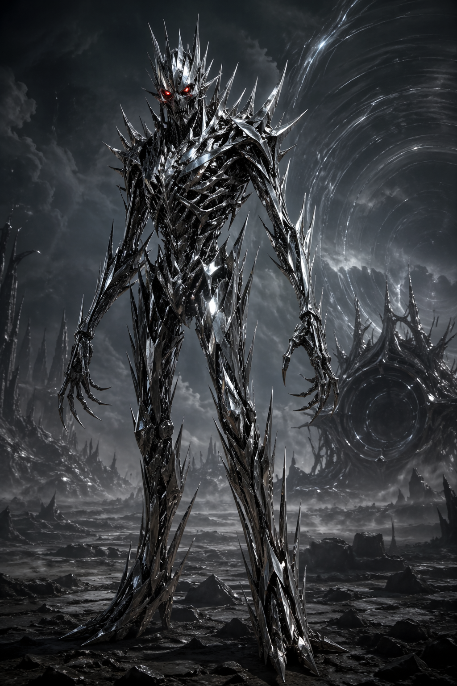

About the Book
Hyperion is a science fiction novel written by Dan Simmons.
The story follows seven pilgrims traveling to the planet Hyperion, each with their own story involving a mysterious entity called "The Shrike".
Main Themes
- Time and fate
- Religion and belief
- Technology and humanity
The Shrike
The Shrike is a mysterious and dangerous creature on Hyperion.

Book Information
| Author | Year | Genre |
|---|---|---|
| Dan Simmons | 1989 | Science Fiction |
Go to the next page for more details.